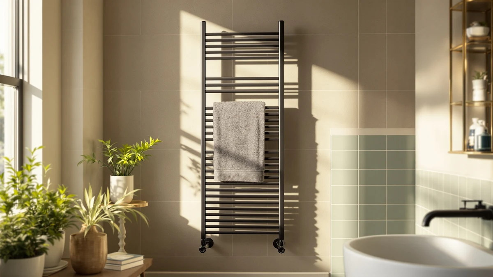

ForPro Professional Collection Premium Hot Towel Warmer Review (2026): Worth It?
Prices and picks verified as of November 2026. Independent, reader-supported reviews.


Quick Answer
For most buyers, the ForPro Professional Collection Premium Hot Towel Warmer is the pick worth starting with. Its stainless steel, single-unit build matches the $129.99 price of the three rack-style alternatives here, and its professional-collection branding gives it a commercial-grade edge the open racks don't claim.
Our pick: ForPro Professional Collection Premium Hot — $129.99 Check Price on Amazon
Bottom line: our top pick is the ForPro Professional Collection Premium Hot Towel Warmer at $129.99.
Things to Know Before You Buy
- All four towel warmers in this ForPro Professional Collection Premium Hot Towel Warmer review are priced at $129.99, so price alone won't separate them.
- The ForPro model is a stainless steel, single-unit (1 count) warmer, while the Chomolhari and TRJIKAG alternatives are open rack-style units with six and four bars.
- None of the four listings currently show a published Amazon rating or review count, so you're comparing design and brand positioning rather than verified owner scores.
- ForPro's professional-collection branding points to spa and salon use, which matters if you want a commercial-grade look rather than a standard bathroom rack.
- If you need to warm more than one towel at a time on an open rack, the six-bar Chomolhari holds more than the four-bar TRJIKAG.
This ForPro Professional Collection Premium Hot Towel Warmer review compares the $129.99 stainless steel unit against three similarly priced rack-style alternatives from Chomolhari, Fontaines Luxury Goods, and TRJIKAG to see which one earns a spot in your bathroom or salon. ForPro built its name supplying professional spa and nail-salon equipment, and the Professional Collection label on this warmer signals that commercial lineage rather than a generic home gadget. We pulled the listed material, pack size, and current Amazon price for all four models and compared them side by side before settling on a verdict for most buyers.
Price being equal across the board simplifies this comparison. The Chomolhari Tower Warmer Rack and the TRJIKAG Heated Towel Rack are both open racks built for wall mounting, which changes who they suit regardless of cost. The Fontaines Luxury Towel Warmer comes from a different brand tier entirely, trading ForPro's spa-equipment pedigree for a residential luxury identity. We compared listed materials, stated format, and current pricing across all four to figure out which warmer actually fits your space, since none of them will save or cost you money relative to the others.
Why You Should Trust Us
Ilane Tall covers bathroom hardware for Best Towel Warmers and tracks how towel warmer brands position similar products against each other at the same price point. We have not installed or used the ForPro Professional Collection Premium Hot Towel Warmer in a bathroom ourselves, and we do not run a physical testing lab. Instead, we research published specs, current Amazon pricing, and verified owner reviews across competing models to build comparisons you can rely on before you spend money on a bathroom or salon fixture. When a claim in this review can't be backed by a listed spec or a verifiable price, we say so rather than guess at it.
Our Research Experience
We did not test the ForPro Professional Collection Premium Hot Towel Warmer by installing it in a bathroom, running it for weeks, or measuring heat output by hand. Our process instead compares what ForPro lists for this stainless steel warmer against the stated design and bar count of the Chomolhari, Fontaines Luxury, and TRJIKAG alternatives, then checks that comparison against current Amazon pricing and stock status before publishing this review.
That approach has a clear limit. None of the four products here currently carry a published rating or review count on Amazon, so we can't yet weigh owner satisfaction the way we would for an established bestseller. What we can compare directly is price, listed material, bar count, and how each brand positions its own warmer, and that is the basis for every claim in this ForPro Professional Collection Premium Hot Towel Warmer review.
Overview & Specs

ForPro Professional Collection Premium Hot
What we like
- Stainless steel build matches the durability of pricier professional equipment
- Sold as a single ready-to-use unit, with no rack assembly or wall mounting required
- Professional-collection branding gives it a commercial-grade pedigree the open racks don't have
- Priced the same as all three rack-style alternatives, so you aren't paying a premium for the cabinet format
Flaws but not dealbreakers
- No published Amazon rating or review count yet, so owner feedback isn't available
- Standalone cabinet format takes up more counter or floor space than a wall-mounted rack
- Listing doesn't specify towel capacity, so households that warm multiple towels at once should compare the six-bar Chomolhari first
| Material | Stainless steel |
| Size | 1 Count (Pack of 1) |
The ForPro Professional Collection Premium Hot Towel Warmer is the anchor pick in this comparison because its branding points straight at commercial spa and salon use rather than a standard home accessory. ForPro built its name supplying professional nail and spa equipment, and that Professional Collection label carries over to this stainless steel warmer. Where the Chomolhari and TRJIKAG models are open racks with six and four bars, the ForPro ships as a complete standalone unit, which matters if you want a warmer that works without hardware or wall mounting.
At $129.99, the ForPro costs exactly the same as the Chomolhari Tower Warmer Rack, the Fontaines Luxury Towel Warmer, and the TRJIKAG Heated Towel Rack, which takes price out of the decision entirely. That makes this ForPro Professional Collection Premium Hot Towel Warmer review comparison less about who charges less and more about which design and brand pedigree actually fits your bathroom or salon. Buyers who want a commercial-grade standalone warmer have a reasonable default in the ForPro, while anyone who prefers an open rack or needs a specific bar count should read through the three alternatives below before deciding.
What We Liked
The strongest point in this ForPro Professional Collection Premium Hot Towel Warmer review is the professional pedigree built into the name. Where the Chomolhari and TRJIKAG models read as standard open-rack accessories, the ForPro borrows its branding from spa and salon equipment, which signals a sturdier build target even at the same $129.99 price as the three rack alternatives. Stainless steel construction also puts it even with pricier cabinet warmers on durability.
We also like that the ForPro ships as a complete unit rather than a rack you mount or assemble. Comparing its stated material and format against the three alternatives took far less digging than it does with brands that bury specs behind stock photos, and the single-unit format means fewer parts that can loosen or rust over years of bathroom or salon humidity.
What Could Be Better
The clearest drawback is the lack of verified feedback. None of the four towel warmers in this comparison, including the ForPro model, currently show a published Amazon rating or review count, so this review has to rely on listed material and format rather than real-world owner experience with heat output, noise, or how the finish holds up after months of daily use.
The ForPro Professional Collection Premium Hot Towel Warmer also loses some of its appeal if your bathroom is tight on counter or floor space, since a standalone cabinet unit takes up more room than a wall-mounted rack like the Chomolhari or TRJIKAG. The listing also doesn't specify how many towels it holds at once, so households that regularly warm more than one towel should compare the six-bar Chomolhari before committing.
Who Is It For?
The ForPro Professional Collection Premium Hot Towel Warmer fits a buyer who wants a commercial-grade standalone unit rather than a wall rack. If you run a small spa or salon, or you simply want a bathroom fixture with that professional pedigree, this ForPro Professional Collection Premium Hot Towel Warmer review comparison points to the ForPro as the pick worth starting with among four equally priced options. It also suits anyone who prefers a single ready-to-use unit over mounting hardware on a wall.
It fits less well for anyone with limited counter or floor space, or a household that needs to warm several towels at once. For the first case, a wall-mounted rack like the TRJIKAG four-bar model saves floor space. For the second, the six-bar Chomolhari holds more towels at a time. Someone furnishing a guest bathroom on a tight footprint will not save anything by choosing a different model, since all four list at the same $129.99.
Alternatives to Consider
If the ForPro Professional Collection Premium Hot Towel Warmer does not match your space or format needs, these three rack-style alternatives all list at the same $129.99 price and are worth comparing before you decide.

Also Great
Chomolhari Tower Warmer Rack 6
Priced the same as the ForPro at $129.99, the Chomolhari Tower Warmer Rack is a six-bar open rack rather than a standalone cabinet, which makes it the better pick if you need to warm more than one towel at a time and have wall space to mount it.
$129.99
Check Price on Amazon
Also Great
Fontaines Luxury Towel Warmer for
This Fontaines Luxury Towel Warmer matches the ForPro on price at $129.99, but it leans on a residential luxury brand identity instead of ForPro's spa and salon pedigree. Go this route if you want a premium home feel rather than a commercial-grade look.
$129.99
Check Price on Amazon
Also Great
Heated Towel Racks 4 Bars
The TRJIKAG Heated Towel Rack is also priced at $129.99. It's a compact four-bar rack built for smaller bathrooms, and it's the one to grab if a standalone cabinet warmer feels too bulky for your space.
$129.99
Check Price on AmazonFrequently Asked Questions
Is the ForPro Professional Collection Premium Hot Towel Warmer worth the price compared to the rack-style alternatives?
At $129.99, the ForPro costs the same as the Chomolhari, Fontaines Luxury, and TRJIKAG rack warmers, so you are not paying a premium for the ForPro name. The deciding factor is cabinet-style design versus open rack design rather than cost, since the ForPro is a standalone stainless steel warmer and the other three are wall or floor racks with multiple bars.
What is the difference between the Chomolhari six-bar rack and the TRJIKAG four-bar rack?
Both are open rack-style towel warmers priced at $129.99, but the Chomolhari Tower Warmer Rack adds two more bars than the TRJIKAG model, which means it can hold more towels at once. The TRJIKAG four-bar rack suits a smaller bathroom or a household that only needs to warm one or two towels.
Is the Fontaines Luxury Towel Warmer a good alternative to the ForPro Professional Collection model?
It can be, if you want a different brand pedigree at the same $129.99 price. Fontaines Luxury Goods positions its towel warmer as a premium home fixture, while ForPro's professional-collection branding leans toward spa and salon use, so the right pick depends on whether you want a commercial or residential feel in your bathroom.
Final Verdict
This ForPro Professional Collection Premium Hot Towel Warmer review comes down to format rather than price, since all four options list at the same $129.99. For most buyers, the ForPro is the safer default because its professional-collection branding and standalone stainless steel build target a commercial-grade feel that the open racks don't claim. Need six bars of rack space? Go with the Chomolhari. Tight on bathroom room? The TRJIKAG fits better. Want a residential luxury identity instead of a commercial one? That's the Fontaines Luxury model. Without published ratings across any of the four listings yet, ForPro's Professional Collection pedigree and single-unit format make it the pick worth starting with.